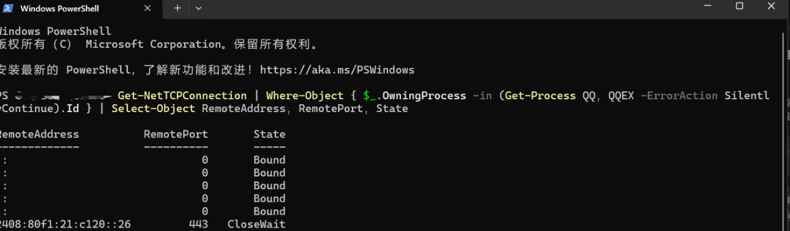
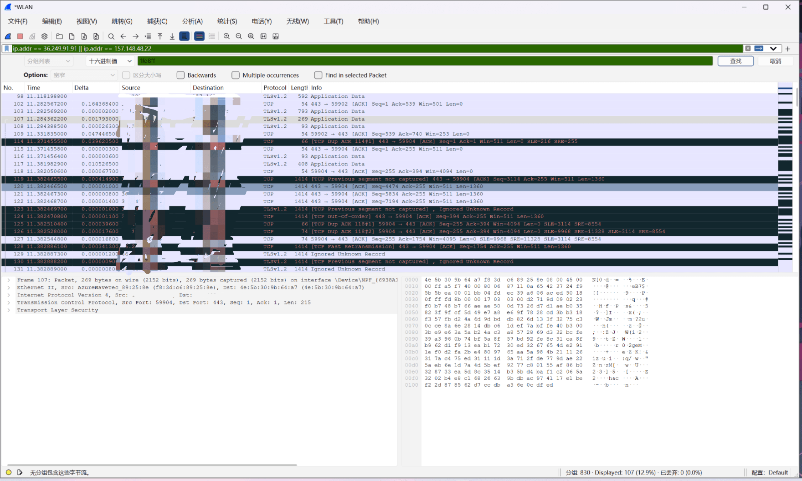
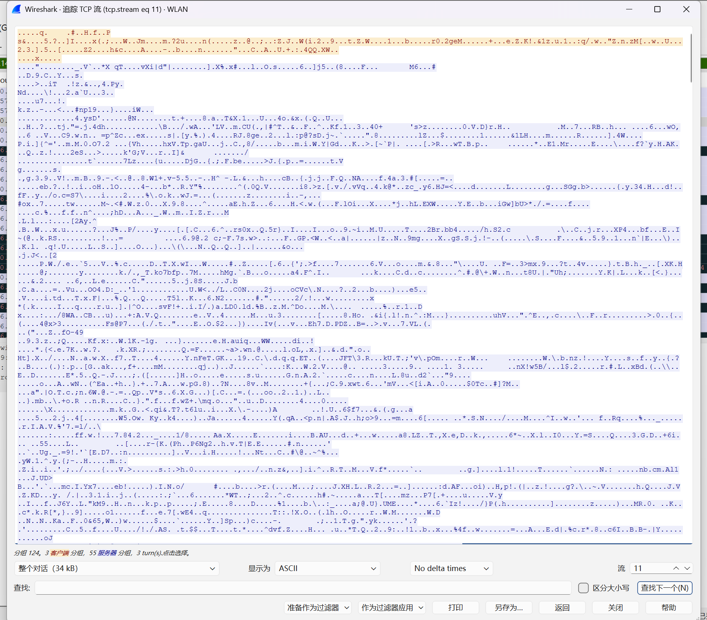
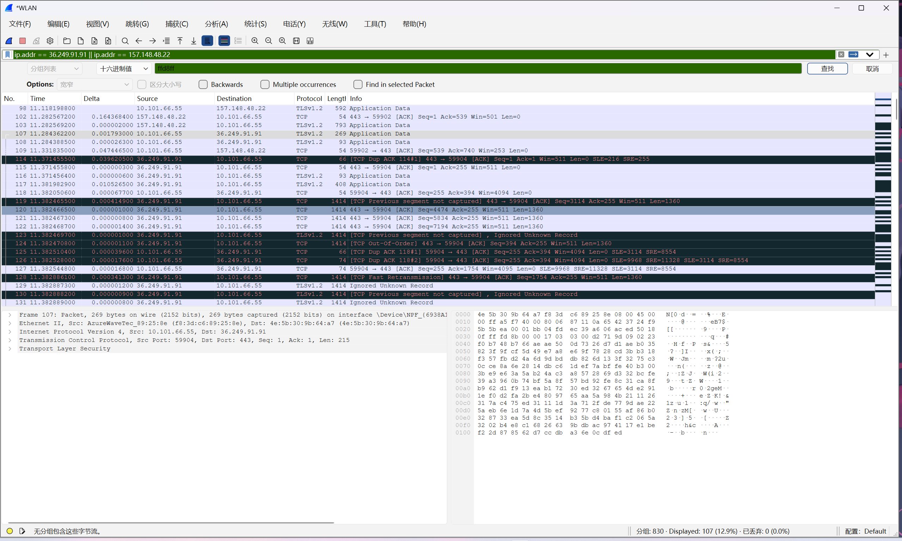

信息安全作业：QQ流量分析（PC-PC端、PC-手机端）
第一部分：实验原理与网络基础
1. 网络通信基础参数
实现上网，通常需要网关（Gateway）、子网掩码、IP地址等核心参数。子网间的通信必须依赖路由器（网关）。如果没有路由器，各个子网将是孤立无法通信的。在Windows系统中，我们通常使用 ipconfig /all 查看网络配置，使用 netstat -an 查看当前网络连接状态。
2. Wireshark 应用初步
Wireshark 是一款强大的网络协议分析工具。本实验将利用其以下核心功能：
- 捕获报文：选择指定的网卡（如 WLAN）捕获流经该网卡的所有数据包。
- 筛选 IP 与协议：利用过滤器（如 ip.addr == x.x.x.x）从海量背景流量中精准定位目标应用（QQ）的流量。
- 搜索与追踪：通过正则表达式、字符串或十六进制特征码进行搜索，以及追踪完整的 TCP 流来查看应用层载荷，验证加密状态。
第二部分：实验操作与数据获取
1. 确定 QQ 通信服务器 IP
现代网络应用（如 QQ）会与多个服务器建立连接。为了精准定位，我们以管理员身份打开 PowerShell，执行以下命令获取 QQ 进程的远程连接 IP：
Get-NetTCPConnection | Where-Object { $_.OwningProcess -in (Get-Process QQ, QQEX -ErrorAction SilentlyContinue).Id } | Select-Object RemoteAddress, RemotePort, State

现象分析：截图显示，QQ主要建立了基于 443 端口（HTTPS）的连接，状态多为 Established（已建立）。获取到的主要远程 IPv4 为 36.249.91.91 和 157.148.48.22（注：同时存在IPv6通信）。
2. Wireshark 过滤与现象观察
在 Wireshark 中选择 WLAN 网卡开始抓包，在 QQ 中向好友或文件传输助手发送文字、图片和压缩包后，停止抓包。在顶部的显示过滤器中输入获取的 IP 进行精准过滤：
现象与原理分析：
在抓包列表中，Protocol（协议）列主要显示为 TCP 和 TLSv1.2。
注：在抓包过程中，出现了许多红底或黑底的数据包，提示如 [TCP Previous segment not captured]（之前的报文段未捕获）或 [TCP Out-Of-Order]（TCP 乱序）。这是因为无线网络（WLAN）存在信号波动，抓包网卡漏掉了部分数据包导致的。但这不影响我们分析整体的协议架构和应用层加密状态。
第三部分：核心问题分析
1. QQ 通信使用的是 UDP 还是 TCP？
答：使用的是 TCP 协议。
深度分析：
从抓包列表的 Protocol 列直观可见，当前 QQ 流量绝大部分基于 TCP。结合端口信息，通信主要建立在 443 端口。老版本的 QQ（OICQ 协议）曾大量使用 UDP 协议（如 8000 端口）以提高传输速度，但新版 QQ（NTQQ）为了保证消息的可靠送达、文件传输的完整性，全面转向了基于 TCP 的传输架构。TCP 的面向连接、可靠传输特性，更符合现代即时通讯的需求。
2. QQ 通信是加密还是明文？
答：全程加密（基于 TLS 加密）。
深度分析：
在 Wireshark 中选中任意 QQ 相关的 TCP 数据包，右键选择 追踪 (Follow) -> TCP 流 (TCP Stream)。
在追踪流弹出的窗口中，我们可以观察到两个关键现象：
1. 在协议识别上，Wireshark 将其识别为 TLSv1.2 甚至 TLSv1.3 的握手过程（如 Client Hello 阶段可见 SNI=tpstelemetry.tencent... 等腾讯域名）。
2. 在数据内容上，应用层数据（Application Data）全部呈现为红蓝相间的乱码。
这证明 QQ 采用了严格的 TLS 加密机制，通信内容（包括文字、图片、文件）在发送前已被加密算法处理，即使抓到了底层的包，没有密钥也无法查看任何明文内容。


3. 恢复可能为明文传输的文件
答：无法直接恢复明文文件。
深度分析：
文件通常具有独特的头部特征码（Magic Number），例如 JPG 图片的文件头为十六进制 FF D8 FF，ZIP 压缩包为 50 4B 03 04。如果在未加密的 HTTP 或 FTP 传输中，我们可以通过搜索这些特征码定位文件流并提取。
我们在 Wireshark 中按下 Ctrl + F 调出“查找分组”窗口，将查找类型设置为 “十六进制值”，输入图片特征码 ffd8ff 进行查找。结果 Wireshark 底部状态栏提示 “无分组包含这些字节流”。

原理解释：由于 QQ 文件传输同样被包裹在 TLS 加密通道内，原本文件头部的 FF D8 FF 在加密后变成了完全随机的字节。因此，在加密流量中直接搜索明文特征码是无效的，无法通过此方法抓取还原出文件。
第四部分：实验总结
通过本次实验，我不仅掌握了 Wireshark 的基础抓包、条件过滤、流追踪等操作，还学会了结合 PowerShell 提取应用底层网络连接信息的方法。更重要的是，通过实际抓包和分析，直观地验证了现代即时通讯软件的安全机制：全面采用 TCP 协议保障可靠性，并全程使用 TLS 协议加密数据。这有效防范了中间人攻击和流量嗅探，保护了用户的隐私安全。